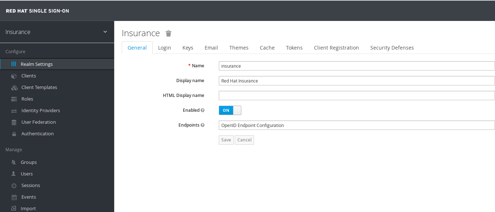
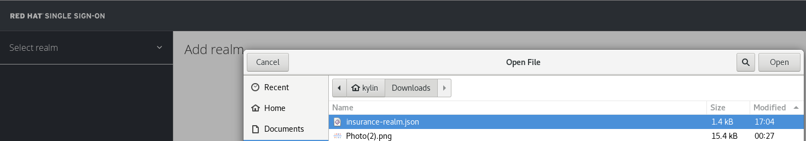
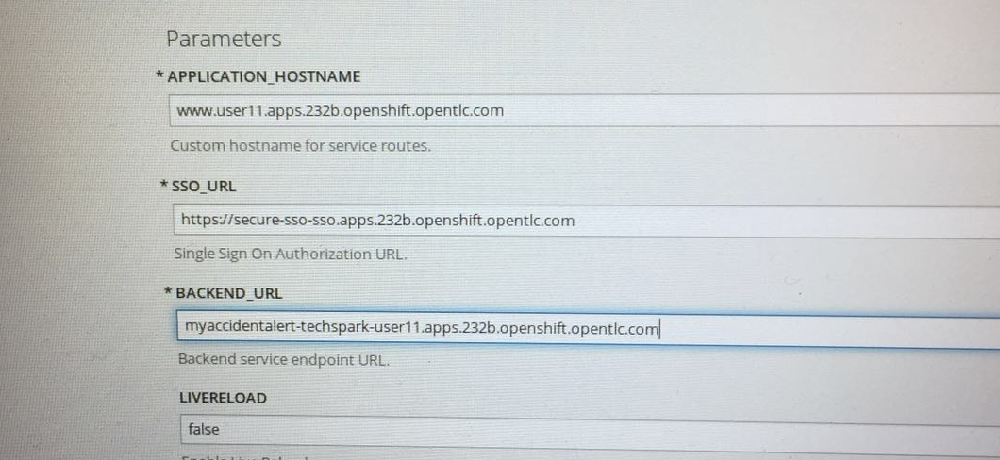
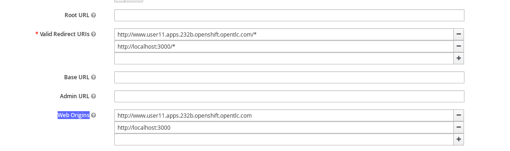
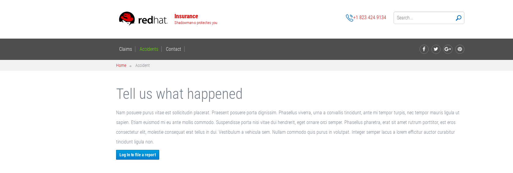

oc new-project sso --display-name="Single Sign On" --description="Single Sign On"
oc create -n sso -f sso-app-secret.jsonSSO, 3Scale on OCP
This docs is for instruct how to run Red Hat SSO and 3Scale on OpenShift Container Platform.
Steps for setting SSO
Execute the following commands to create a project and install security certs
|
Note
|
sso-app-secret.json can be download from https://raw.githubusercontent.com/jboss-openshift/application-templates/ose-v1.4.5/secrets/sso-app-secret.json.
|
Navigate to OCP Console, copy https://raw.githubusercontent.com/jboss-openshift/application-templates/ose-v1.4.5/sso/sso71-mysql-persistent.json while create project, set the following environment patameters:
-
Server Keystore Password - mykeystorepass (note, the 'mykeystorepass' is defined in sso-app-secret.json)
-
SSO Admin Username - admin
-
SSO Admin Password - admin
Click the Continute toOverview go to the Overview page, Select the sso go to the Deployements page, Action → Edit, change the Image Stream Tag version from 1.1 to 1.2, Save the edit.
Steps for setting 3Scale
Execute below command to create a new project
oc new-project amp --display-name="API Management Platform" --description="API Management Platform"-
Click Add to Project, copy the content of 'amp.yml' which can be find from https://raw.githubusercontent.com/3scale/3scale-amp-openshift-templates/2.1.0-GA/amp/amp.yml.
-
Click continue to process, add parameter WILDCARD_DOMAIN with value '3scale-admin.3scale-admin.apps.232b.openshift.opentlc.com'
-
Find the login user/password via: Overview → 'system-app' → Environment, the USER_LOGIN is the login username, and the USER_PASSWORD is the login password, eg, admin/qo8hu0ks.
-
Login to 3Scale via 'https://3scale-admin.3scale-admin.apps.232b.openshift.opentlc.com', the above user/password should be used.
Steps for setting OpenID Connect integration with SSO
Find the SSO URL and login
$ oc project sso
$ oc get routes
NAME HOST/PORT PATH SERVICES PORT TERMINATION WILDCARD
secure-sso secure-sso-sso.apps.232b.openshift.opentlc.com secure-sso <all> passthrough None
sso sso-sso.apps.232b.openshift.opentlc.com sso <all> NoneThe secure-sso-sso.apps.232b.openshift.opentlc.com is the url can used to login, click https://secure-sso-sso.apps.232b.openshift.opentlc.com/ to login, once login success, you will get the following page:

Select and click Add realm, click Select file, point to insurance-realm.json as below:

|
Note
|
the insurance-realm.json can be found from https://raw.githubusercontent.com/weimeilin79/techsparkpoc/master/templates/insurance-realm.json
|
Deploy a web project
Deploy the templete
oc create -f accidentalert-ui-template.json -n techspark-user11|
Note
|
the accidentalert-ui-template.json and accidentalert-ui can be fround from https://github.com/weimeilin79/techsparkpoc/tree/master/projects/accidentalert-ui.
|
-
Create the web project base on templete create above, note that in the Process page, enter 3 parameters: APPLICATION_HOSTNAME, SSO_URL and BACKEND_URL, it looks as below page:

|
Note
|
BACKEND_URL point to a project which created in previous lab. |
-
Create the route, once the route expose done, the below commands can used to check:
$ oc get routes
NAME HOST/PORT PATH SERVICES PORT TERMINATION WILDCARD
accidentalert-ui-http-route www.user11.apps.232b.openshift.opentlc.com accidentalert-ui-http <all> NoneSetting up the authentication url path in SSO, naviagate to SSO page, Configure → Client, in accidentalert-ui section, select Edit button, make sure the Valid Redirect URIs and Web Origins point tot the Web project route which configured in above steps, a correct setting should be looks:

Click Save to finish the setting.
Test the SSO via web project URL: http://www.user11.apps.232b.openshift.opentlc.com/. On the welcome page, click the Accidents in the top menu you will get the following page:

Click the blue Login to file a report will redirect to SSO login page, login with the username/password, which defined in insurance-realm.json, eg, statepolice/password.